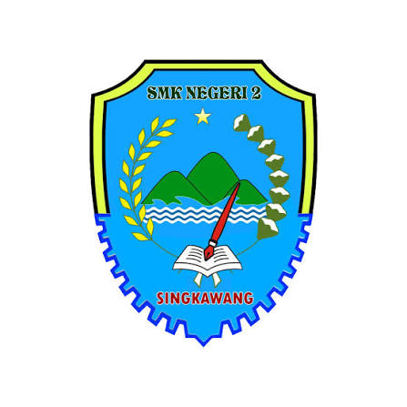
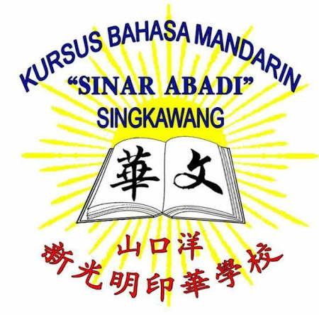

Cakrawala University
2026年9月 — 至今Artificial Intelligence
在读 · 人工智能专业
LANGUAGE × TECHNOLOGY
我是 Calvin 吴克傧，在 IWIP 从事中文翻译与费用结算，喜欢把复杂的工作变得简单。
用语言连接彼此，用 AI 与 Python 改善日常工作。正在学习人工智能。
探索我的作品 ↗从语言与会计，到人工智能。
在读 · 人工智能专业

山口洋，印度尼西亚 · 成绩 90.03 / 100

山口洋，印度尼西亚
费用核对与结算、Smart Salary 功能优化、计算逻辑排查及 AI / Python 工作自动化。
优化表单选项与填写限制，推动取消 GA 审批环节；开发 OA 自动填表与按公司批量合并 PDF 的工具。
处理中国籍员工交通、住宿及办事处运营费用报销；审核机票与酒店费用，核对接送及额外餐食数据。
点击展开 · 再次点击收起
货架有货，库存有序。
以 Python 开发的终端库存管理项目，协助追踪仓库与货架库存、提醒补货与到期日期，并依 FEFO 原则优先处理较早到期的商品。
数据模型、F1 补货提醒与测试、示例数据、主菜单／F8 集成、F3／F5 错误修正及回归测试。
电脑程序设计导论 · 第2组 · 团队合作项目
查看 GitHub 项目 ↗ETS · International Test Center
测验：2024年8月7日
听力 395 · 阅读 335。总分 730/990。
BNSP · LSP SMK Negeri 2 Singkawang
颁发：2025年6月15日
KKNI Level II 会计与机构财务职能认证，有效期3年。
LKP Bahasa Mandarin Sinar Abadi
测验：2025年5月8日 · 颁发：2025年6月19日
于山口洋通过进阶华语考试（四级汉语考试）。
想法、建议，或一句你好。不需要姓名或邮箱。